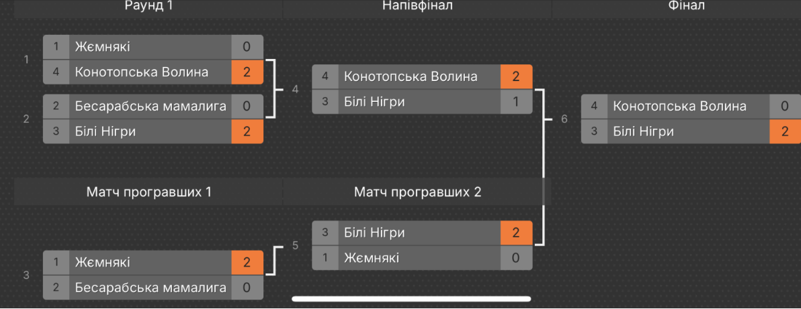

Мінор 2025
🔴 Турнір закінчено
Дата: 19.03.2025
Призовий фонд: 1000грн
Опис
Довгоочікуване повернення найпрестижнішого турніру Сварогу, Мінору, сталося через рік після його останнього проведення.
Турнір запам'ятався неймовірною напругою, особливо у матчах півфіналу, де комадна Білі Нігри впала в нижню сітку, але врешті
її гравці знайшли в собі сили повернутися, і в сильному фіналі вони увіковічили своє ім'я як переможці Мінору 2025.
Регламент
- Призовий фон визначається кількістю учасників, і стартовим внеском.
- Турнір пройде за системою double elimination.
- BO3 матчі.
- 4 команд, 8 учасників.
Призери
🥇 Білі Нігри
🥈 Конотопська Волина
🥉 Жємнякі
MVP Турніру

Kiriya
Учасники


Турнірна сітка
